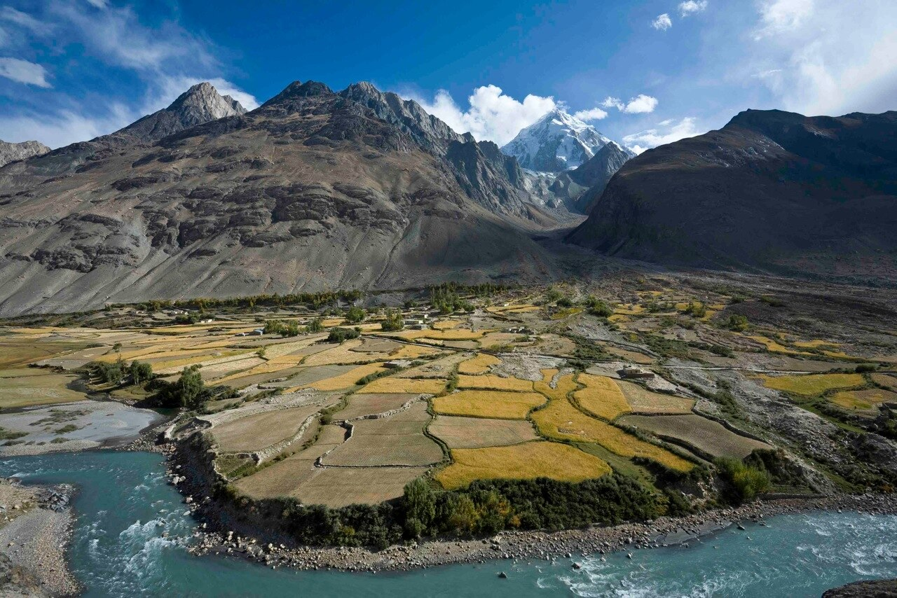

01
Nature & Mountains
Discover breathtaking mountains, valleys, lakes and landscapes.
DISCOVER AFGHANISTAN
Discover the hidden beauty, rich history, diverse culture and breathtaking nature of Afghanistan.
Start Exploring
A Land of Beauty & Heritage
GET TO KNOW AFGHANISTAN
Afghanistan is a land of extraordinary contrasts, where majestic mountains meet ancient cities, timeless traditions and breathtaking landscapes. Every province holds a story, every tradition carries a memory, and every journey reveals something new.
Explore the country beyond the familiar and discover the beauty, history and culture that make Afghanistan truly unique.
Discover Afghanistan ↗EXPLORE AFGHANISTAN
Explore the beauty, history and culture of Afghanistan through our stories.
Discover the unique beauty of Afghanistan's provinces.
Explore More ↗Journey through centuries of history and heritage.
Explore More ↗Discover mountains, lakes and breathtaking landscapes.
Explore More ↗Experience traditional dishes and local flavors.
Explore More ↗Discover the traditions and diversity of Afghan people.
Explore More ↗Learn fascinating facts about Afghanistan.
p> Explore More ↗THE BEAUTY OF AFGHANISTAN
Discover breathtaking mountains, valleys, lakes and landscapes.
Journey through centuries of history, civilizations and heritage.
Explore the traditions, customs and rich cultural diversity of Afghanistan.
EXPLORE

A historic city known for its architecture, culture and ancient heritage.

The capital of Afghanistan, surrounded by mountains and rich in history.

Famous for its beautiful valleys, mountains and historical heritage.

A mountainous region with spectacular landscapes and natural beauty.
HERITAGE

One of the most famous historical landmarks of Herat.

A remarkable historical monument surrounded by mountains.

A region with remarkable natural and historical significance.
BEAUTY OF NATURE

Majestic mountains stretching across different regions of Afghanistan.

Beautiful natural lakes hidden among the mountains and valleys.

Green valleys and breathtaking landscapes waiting to be discovered.
TASTE OF AFGHANISTAN

A famous Afghan dish made with rice, carrots, raisins and meat.

Traditional steamed dumplings filled with seasoned meat.

Delicious dumplings traditionally served with yogurt and a flavorful sauce.
TRADITIONS
Afghanistan is home to diverse traditions, languages, clothing, crafts and cultural practices passed from one generation to another.
Traditional carpets, embroidery and handmade crafts represent an important part of Afghan culture.
DID YOU KNOW?
Afghanistan is home to many different landscapes, from high mountains to green valleys.